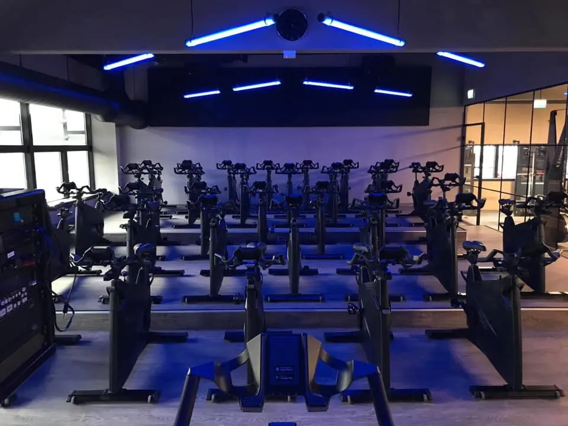

Træningsmuligheder i Aarhus: Guide til Studerende
Intro
Som studerende i Aarhus kan det være en udfordring at finde tid og ressourcer til at træne. Men heldigvis har byen masser at byde på, når det kommer til træningsmuligheder, der er tilpasset studerendes behov. Uanset om du er til holdtræning, styrketræning eller udendørstræning, er der noget for enhver smag. I denne guide vil vi udforske de bedste træningsmuligheder i Aarhus, så du kan finde den rette løsning for dig.

Om Træningsmulighederne i Aarhus
Aarhus tilbyder et væld af træningsmuligheder, der kan passe til både din livsstil og dit budget. Her er nogle af de mest populære:
- Fitnesscentre: Byen har mange fitnesscentre, der tilbyder studierabat, så du kan træne uden at sprænge budgettet. Steder som FitnessX, Pure Gym og Aarhus Gymnastikforening har forskellige medlemskaber.
- Udendørstræning: arhus parker og naturområder er perfekte til udendørs træning. I Risskov, Marselisborg Skovene og ved stranden kan du løbe, cykle eller lave styrkeøvelser. Mange steder er der også udendørs fitnessudstyr, som er gratis at benytte.
- Holdtræning: vis du gerne vil træne i fællesskab, er der mange holdtræningsmuligheder i byen. Alt fra yoga og pilates til crossfit og spinning kan findes i fitnesscentre og lokale foreninger. At træne med andre kan være en god motivationsfaktor, og det kan også hjælpe dig med at møde nye mennesker.
- Studenterforeninger: Der findes flere studenterforeninger i Aarhus, som tilbyder sportsaktiviteter og træningshold for studerende. Dette kan være en fantastisk måde at kombinere træning med sociale aktiviteter og netværk.
Afrunding
Uanset hvilken træningsform du vælger, er det vigtigt at finde noget, du nyder, så det ikke føles som en pligt. At have en god balance mellem studier og fysisk aktivitet kan være med til at forbedre din livskvalitet og mentale velvære. Det kan også hjælpe dig med at tackle stress og øge din koncentration.